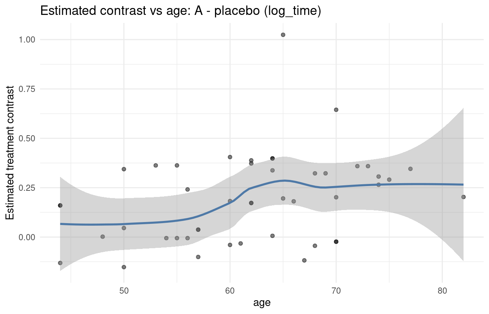
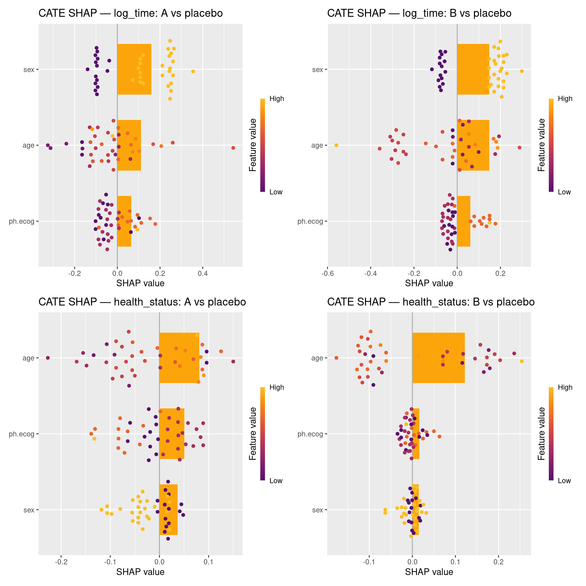

Code
packages <- c(
"tidyverse",
"survival",
"RCausalML",
"xgboost",
"ranger",
"ggplot2",
"kernelshap",
"shapviz",
"patchwork"
)
This tutorial demonstrates how to use the MultiArmCausalBoost class in RCausalML to estimate heterogeneous treatment effects in a multi-arm setting with boosted trees. We cover the motivation, assumptions, and implementation details of this approach, along with practical code examples using a simulated multi-arm dataset based on the lung dataset from the survival package.
A Boosted Multi-Arm Causal Model estimates heterogeneous treatment effects (HTE) in settings with more than two treatment options — for example, a placebo arm alongside two or more active interventions. Rather than fitting a single causal model across all arms simultaneously, it adopts a T-learner strategy: one outcome model per arm, each capturing the arm-specific relationship between covariates and outcomes. Treatment effects are then recovered as contrasts between arm predictions, relative to a chosen baseline.
The “boosted” label refers to the choice of learner: each outcome model is a C-XGBoost (two-head XGBoost) regressor, bringing strong tabular performance — nonlinear interactions, robustness to irrelevant features, and good calibration on moderate sample sizes — to each arm independently.
This approach trades off some efficiency (arm models share no parameters) for simplicity and flexibility: it makes no assumptions about how treatment effects relate across arms, and each arm model can be tuned independently.
The Boosted Multi-Arm Causal Model is appropriate when:
Typical applications include clinical trials comparing multiple drug regimens against placebo, policy evaluations with several intervention variants, and marketing experiments with multiple campaign conditions.
T-learner. The T-learner (or “treatment-specific learner”) fits a separate outcome model for each arm \(k\):
\[\hat{\mu}_k(x) \approx E[Y \mid X = x,\, W = k], \qquad k = 0, 1, \ldots, K-1\]
where arm \(k = b\) (typically \(k = 0\), placebo or control) serves as the baseline. Each model is trained only on units assigned to arm \(k\), so the models are entirely independent of one another.
Treatment contrasts. The conditional average treatment effect (CATE) for arm \(k\) relative to baseline \(b\) is:
\[\tau_{k \leftarrow b}(x) = \hat{\mu}_k(x) - \hat{\mu}_b(x)\]
For \(K\) arms, this yields \(K - 1\) contrast surfaces over the covariate space. For example, with arms \(\{\)placebo, drug A, drug B\(\}\), the model returns \(\hat{\tau}_{A \leftarrow \text{placebo}}(x)\) and \(\hat{\tau}_{B \leftarrow \text{placebo}}(x)\) for each individual.
Pairwise contrasts. Any two non-baseline arms can also be compared directly:
\[\tau_{k \leftarrow j}(x) = \hat{\mu}_k(x) - \hat{\mu}_j(x)\]
This is straightforward since all \(\hat{\mu}_k\) are defined over the full covariate space.
Propensity scores. A multiclass propensity model estimates \(\hat{e}_k(x) = P(W = k \mid X = x)\) for all arms jointly, typically using a probability forest or multinomial model. These propensity scores are not incorporated into the outcome model training (the approach is not doubly robust), but serve three diagnostic purposes: detecting covariate imbalance across arms, flagging low-overlap regions where counterfactual predictions are unreliable, and enabling inverse probability weighting (IPW) for population-level ATE estimation if needed.
Identification assumptions. Like all observational causal methods, the T-learner requires:
T-learner bias in small arms. When one arm has few observations, its outcome model is poorly estimated, which degrades the contrast estimates for that arm disproportionately. S-learner or X-learner variants can partially mitigate this by sharing information across arms.
No regularization toward a common effect. Unlike the Multi-Arm/Multi-Outcome Causal Forest (which uses a joint splitting criterion), T-learner arm models are fully independent. If treatment effects are genuinely similar across arms, a joint model would be more efficient.
Not doubly robust. Propensity scores are estimated but not used in the outcome model training. Misspecification of \(\hat{\mu}_k\) is not corrected by a well-estimated propensity model.
Extrapolation risk. Each \(\hat{\mu}_k\) must produce predictions for all units regardless of arm assignment — including covariate regions where that arm had few or no training observations. Low-propensity regions should be interpreted cautiously.

A few things worth emphasizing from the pipeline:
Step 2 extrapolation is the central challenge. Each arm model is trained on only the units assigned to that arm, but must predict \(\hat{\mu}_k(x)\) for every unit in the dataset — including those from other arms. In regions of covariate space where arm \(k\) is rare (low propensity), the model is extrapolating from very little data. The propensity scores in step 4 directly diagnose this risk: wherever \(\hat{e}_k(x)\) is near zero, the corresponding \(\hat{\mu}_k(x)\) estimates should be treated with caution.
Step 3’s “best arm” output is operationally the most useful in personalized treatment settings. For each individual, the model returns \(\text{argmax}_k\, \hat{\tau}_{k \leftarrow b}(x)\), identifying which arm delivers the largest estimated benefit. This is the basis for individualized treatment rules (ITRs) — policies that assign different arms to different subgroups based on predicted effect heterogeneity. That said, uncertainty around CATE estimates should be factored in before acting on these assignments; small margin differences between arms may not be reliable.
Step 4 propensity scores serve three distinct roles that are worth keeping separate: (1) diagnostics — visualizing covariate overlap across arms to identify extrapolation risk; (2) ATE correction — IPW-adjusted averages account for non-random arm assignment in observational data; and (3) sensitivity analysis — comparing naive and propensity-weighted ATEs reveals how sensitive conclusions are to the observational design.
Boosted Multi-Arm Causal Model is implemented in RCausalML as the R6 class MultiArmCausalBoost in R/multi_arm_causal_boost.R. The implementation is designed for flexibility and interpretability, with the following features:
ranger for diagnosticsFollowing R packages are required to run this notebook. If any of these packages are not installed, you can install them using the code below:
tidyverse, survival, RCausalML, xgboost, ranger, ggplot2, kernelshap, shapviz, patchwork
packages <- c(
"tidyverse",
"survival",
"RCausalML",
"xgboost",
"ranger",
"ggplot2",
"kernelshap",
"shapviz",
"patchwork"
)# Install missing packages
# new_packages <- packages[!(packages %in% installed.packages()[, "Package"])]
# if (length(new_packages)) install.packages(new_packages)# Load packages with suppressed messages
invisible(lapply(packages, function(pkg) {
suppressPackageStartupMessages(library(pkg, character.only = TRUE))
}))# Check loaded packages
cat("Successfully loaded packages:\n")Successfully loaded packages: [1] "package:patchwork" "package:shapviz" "package:kernelshap"
[4] "package:ranger" "package:xgboost" "package:RCausalML"
[7] "package:survival" "package:lubridate" "package:forcats"
[10] "package:stringr" "package:dplyr" "package:purrr"
[13] "package:readr" "package:tidyr" "package:tibble"
[16] "package:ggplot2" "package:tidyverse" "package:stats"
[19] "package:graphics" "package:grDevices" "package:utils"
[22] "package:datasets" "package:methods" "package:base" We use lung from survival and simulate a 3-arm treatment:
placebo (baseline)ABWe also create two outcomes:
log_time: log survival timehealth_status: a simulated binary secondary outcome with treatment-dependent probabilitiesdata(lung, package = "survival")
set.seed(123)
lung_data <- lung %>%
dplyr::filter(!is.na(age), !is.na(sex), !is.na(ph.ecog), !is.na(time)) %>%
dplyr::mutate(
treatment = as.factor(sample(
c("placebo", "A", "B"),
n(),
replace = TRUE,
prob = c(0.4, 0.3, 0.3)
)),
health_status = rbinom(
n(),
1,
prob = 0.3 + 0.10 * (treatment == "A") + 0.15 * (treatment == "B")
),
log_time = log(time)
)
# For a fast, reproducible tutorial render, keep a moderate sample size.
set.seed(123)
n_keep <- min(250, nrow(lung_data))
lung_data <- lung_data %>% dplyr::slice_sample(n = n_keep)
# Covariates, treatment, outcomes
X <- lung_data %>% dplyr::select(age, sex, ph.ecog) %>% as.matrix()
W <- relevel(lung_data$treatment, ref = "placebo")
Y <- lung_data %>% dplyr::select(log_time, health_status) %>% as.matrix()
colnames(Y) <- c("log_time", "health_status")
# Train/test split
set.seed(123)
n <- nrow(lung_data)
train_idx <- sample(seq_len(n), size = floor(0.8 * n))
test_idx <- setdiff(seq_len(n), train_idx)
X_train <- X[train_idx, , drop = FALSE]
W_train <- W[train_idx]
Y_train <- Y[train_idx, , drop = FALSE]
X_test <- X[test_idx, , drop = FALSE]
W_test <- W[test_idx]
Y_test <- Y[test_idx, , drop = FALSE]MultiArmCausalBoost on log_time and health_status
MultiArmCausalBoost fits:
log_time and health_status)ranger (probability forest)Key choices you control:
placebo)parameters = list(...) (same objective for both outcomes here; binary health_status uses squared error for a smooth tutorial)model <- MultiArmCausalBoost$new(
parameters = list(
eta = 0.10,
max_depth = 3L,
subsample = 0.8,
colsample_bytree = 0.8,
tree_method = "hist",
objective = "reg:squarederror"
),
baseline = "placebo"
)
model$fit(
X = X_train,
Y = Y_train,
W = W_train,
nrounds = 10L,
verbose = 1L
)[MultiArmCausalBoost] Fitting outcome models...
[MultiArmCausalBoost] Fitting propensity model...
[MultiArmCausalBoost] Training complete 0.78 sec
[MultiArmCausalBoost] Propensity OOB error: 0.4315model$summary()
MultiArmCausalBoost Model Summary
Treatments
Baseline arm : placebo
Treatment levels : placebo, A, B
Arm counts : placebo=69, A=51, B=61
Outcomes
Number of outcomes : 2
Outcome names : log_time, health_status
XGBoost parameters
eta : 0.1000
max_depth : 3
subsample : 0.80
colsample_bytree : 0.80
lambda : 1.00
alpha : 0.00
Propensity model
Ranger OOB error : 0.4315
Ranger num.trees : 200
Ranger max.depth : 6
Fit time : 0.78 sectau_hat_*)The predict() method returns a list:
mu_hat: potential outcomes array \([n, \text{arms}, \text{outcomes}]\)
tau_hat: contrasts array \([n, (\text{arms} - 1), \text{outcomes}]\) relative to baseline
propensity_score: matrix \([n, \text{arms}]\)
Below we store contrasts for each outcome as \(n \times (\text{number of contrasts})\) matrices.
pred <- model$predict(X_test, drop = FALSE)
tau_hat_log_time <- pred$tau_hat[, , "log_time", drop = TRUE]
tau_hat_health_status <- pred$tau_hat[, , "health_status", drop = TRUE]
cn_tau <- dimnames(pred$tau_hat)[[2]]
if (is.null(dim(tau_hat_log_time))) {
tau_hat_log_time <- matrix(tau_hat_log_time, ncol = 1L, dimnames = list(NULL, cn_tau))
} else {
colnames(tau_hat_log_time) <- cn_tau
}
if (is.null(dim(tau_hat_health_status))) {
tau_hat_health_status <- matrix(
tau_hat_health_status,
ncol = 1L,
dimnames = list(NULL, cn_tau)
)
} else {
colnames(tau_hat_health_status) <- cn_tau
}
str(pred$mu_hat) num [1:46, 1:3, 1:2] 5.12 5.32 5.46 5.54 5.36 ...
- attr(*, "dimnames")=List of 3
..$ : NULL
..$ : chr [1:3] "placebo" "A" "B"
..$ : chr [1:2] "log_time" "health_status"str(pred$tau_hat) num [1:46, 1:2, 1:2] 0.34387 0.30654 0.36272 0.00625 0.18095 ...
- attr(*, "dimnames")=List of 3
..$ : NULL
..$ : chr [1:2] "A - placebo" "B - placebo"
..$ : chr [1:2] "log_time" "health_status"head(tau_hat_log_time) A - placebo B - placebo
[1,] 0.343873978 0.4394517
[2,] 0.306544304 0.2806864
[3,] 0.362724304 0.1017337
[4,] 0.006246567 -0.3594255
[5,] 0.180954456 -0.1531358
[6,] 0.241098881 0.2780666head(tau_hat_health_status) A - placebo B - placebo
[1,] 0.146654874 0.345004708
[2,] 0.420600221 0.073075190
[3,] -0.009500086 -0.043385327
[4,] 0.327854767 0.003009811
[5,] 0.386021137 0.010609448
[6,] 0.521187723 0.436260164head(pred$propensity_score) placebo A B
[1,] 0.3431003 0.2435928 0.4133069
[2,] 0.3328395 0.2183218 0.4488388
[3,] 0.2646455 0.3400060 0.3953485
[4,] 0.5128225 0.2430322 0.2441454
[5,] 0.5003326 0.2791531 0.2205143
[6,] 0.4444288 0.2283932 0.3271780For each non-baseline arm \(k\) and outcome \(m\), we use the standard multi-arm doubly robust score (same spirit as AIPW), evaluated at the fitted outcome models \(\hat\mu_a(X)\) and propensities \(\hat e_a(X)\):
\[ \psi_i^{(k)} = \hat\mu_k(X_i) - \hat\mu_b(X_i) + \bigl(Y_{im} - \hat\mu_{W_i}(X_i)\bigr)\left(\frac{\mathbb{1}\{W_i=k\}}{\hat e_k(X_i)} - \frac{\mathbb{1}\{W_i=b\}}{\hat e_b(X_i)}\right), \]
with baseline \(b\) = placebo. We average \(\psi_i^{(k)}\) over the training sample (where \(Y\) is observed). This is a plug-in DR estimator (nuisances fit on the same data); for rigorous inference, sample splitting or cross-fitting is preferred.
multi_arm_dr_ate <- function(Y, W, mu_hat, ps, baseline) {
W_char <- as.character(droplevels(W))
arms <- dimnames(mu_hat)[[2]]
outcomes <- dimnames(mu_hat)[[3]]
n <- nrow(Y)
M <- dim(mu_hat)[3]
arm_idx <- match(W_char, arms)
contrast_arms <- setdiff(arms, baseline)
cn <- paste0(contrast_arms, " - ", baseline)
out <- matrix(
NA_real_,
nrow = length(contrast_arms),
ncol = M,
dimnames = list(cn, outcomes)
)
idx_row <- seq_len(n)
for (m in seq_len(M)) {
mu_w <- mu_hat[cbind(idx_row, arm_idx, m)]
for (j in seq_along(contrast_arms)) {
k <- contrast_arms[j]
mu_k <- mu_hat[, k, m]
mu_b <- mu_hat[, baseline, m]
e_k <- ps[, k]
e_b <- ps[, baseline]
I_k <- as.numeric(W_char == k)
I_b <- as.numeric(W_char == baseline)
psi <- (mu_k - mu_b) + (Y[, m] - mu_w) * (I_k / e_k - I_b / e_b)
out[j, m] <- mean(psi)
}
}
out
}
pred_train <- model$predict(X_train, drop = FALSE)
ate_tab <- multi_arm_dr_ate(
Y_train,
W_train,
pred_train$mu_hat,
pred_train$propensity_score,
baseline = model$baseline
)
ate_log_time <- ate_tab[, "log_time"]
ate_health_status <- ate_tab[, "health_status"]
print(ate_tab) log_time health_status
A - placebo 0.16571814 0.2941717
B - placebo -0.04321392 0.1103592These are not doubly-robust estimates; they’re simply averages of the model’s predicted individual contrasts (use ate_log_time / ate_health_status above for DR averages on the training sample).
# A tibble: 4 × 3
contrast outcome avg_contrast
<fct> <fct> <dbl>
1 A - placebo log_time 0.194
2 B - placebo log_time 0.0420
3 A - placebo health_status 0.288
4 B - placebo health_status 0.139 As a simple check, plot a contrast against a key covariate.
contrast_names <- dimnames(pred$tau_hat)[[2]]
outcome_names <- dimnames(pred$tau_hat)[[3]]
# pick the first available contrast/outcome for a compact demo
chosen_contrast <- contrast_names[1]
chosen_outcome <- outcome_names[1]
tau_slice <- if (identical(chosen_outcome, "log_time")) {
tau_hat_log_time
} else {
tau_hat_health_status
}
plot_df <- tibble::tibble(
age = X_test[, "age"],
tau = tau_slice[, chosen_contrast]
)
ggplot(plot_df, aes(x = age, y = tau)) +
geom_point(alpha = 0.5) +
geom_smooth(method = "loess", se = TRUE, color = "#4E79A7") +
labs(
title = paste0("Estimated contrast vs age: ", chosen_contrast, " (", chosen_outcome, ")"),
x = "age",
y = "Estimated treatment contrast"
) +
theme_minimal()
log_time and health_status
Because the model fits one booster per (arm, outcome), gain-based importance is specific to an arm/outcome pair. Below: arm A with outcome index 1L = log_time, then 2L = health_status (plot_importance() takes a numeric outcome index).
model$plot_importance(arm = "A", outcome = 1L, top_n = 10L, metric = "Gain")
model$plot_importance(arm = "A", outcome = 2L, top_n = 10L, metric = "Gain")
If you need custom XGBoost tooling (e.g., advanced importance, SHAP from xgboost), you can retrieve a fitted booster:
booster_A_log_time <- model$outcome_models[["A"]][["log_time"]]
booster_A_log_time##### xgb.Booster
call:
xgboost::xgb.train(params = params, data = dtrain, nrounds = as.integer(nrounds),
evals = evals, verbose = as.integer(verbose >= 2L))
# of features: 3
# of rounds: 10
callbacks:
evaluation_log
evaluation_log:
iter train_rmse
<num> <num>
1 0.8268409
2 0.8108317
--- ---
9 0.7118305
10 0.6981760shapviz + kernelshap)We explain the predicted contrast \(\hat\tau_k(X) = \hat\mu_k(X) - \hat\mu_{\text{placebo}}(X)\) as a function of \(X\), separately for log_time and health_status. Use a small background set and a subsample of the test rows so kernel SHAP stays fast.
library(kernelshap)
library(shapviz)
library(patchwork)
pred_A_vs_placebo_log <- function(object, newdata) {
pr <- object$predict(as.matrix(newdata), drop = FALSE)
pr$tau_hat[, "A - placebo", "log_time"]
}
pred_B_vs_placebo_log <- function(object, newdata) {
pr <- object$predict(as.matrix(newdata), drop = FALSE)
pr$tau_hat[, "B - placebo", "log_time"]
}
pred_A_vs_placebo_health <- function(object, newdata) {
pr <- object$predict(as.matrix(newdata), drop = FALSE)
pr$tau_hat[, "A - placebo", "health_status"]
}
pred_B_vs_placebo_health <- function(object, newdata) {
pr <- object$predict(as.matrix(newdata), drop = FALSE)
pr$tau_hat[, "B - placebo", "health_status"]
}
set.seed(42)
n_bg <- min(50L, nrow(X_train))
bg_idx <- sample.int(nrow(X_train), n_bg)
bg_small <- X_train[bg_idx, , drop = FALSE]
n_explain <- min(40L, nrow(X_test))
X_shap <- X_test[seq_len(n_explain), , drop = FALSE]
shap_A_log <- kernelshap(
object = model,
X = X_shap,
bg_X = bg_small,
pred_fun = pred_A_vs_placebo_log,
verbose = FALSE
)
shap_B_log <- kernelshap(
object = model,
X = X_shap,
bg_X = bg_small,
pred_fun = pred_B_vs_placebo_log,
verbose = FALSE
)
shap_A_health <- kernelshap(
object = model,
X = X_shap,
bg_X = bg_small,
pred_fun = pred_A_vs_placebo_health,
verbose = FALSE
)
shap_B_health <- kernelshap(
object = model,
X = X_shap,
bg_X = bg_small,
pred_fun = pred_B_vs_placebo_health,
verbose = FALSE
)
shp_A_log <- shapviz(shap_A_log)
shp_B_log <- shapviz(shap_B_log)
shp_A_health <- shapviz(shap_A_health)
shp_B_health <- shapviz(shap_B_health)
plt1 <- sv_importance(shp_A_log, kind = "both") + ggplot2::ggtitle("CATE SHAP — log_time: A vs placebo")
plt2 <- sv_importance(shp_B_log, kind = "both") + ggplot2::ggtitle("CATE SHAP — log_time: B vs placebo")
plt3 <- sv_importance(shp_A_health, kind = "both") + ggplot2::ggtitle("CATE SHAP — health_status: A vs placebo")
plt4 <- sv_importance(shp_B_health, kind = "both") + ggplot2::ggtitle("CATE SHAP — health_status: B vs placebo")
(plt1 | plt2) / (plt3 | plt4)
RCausalML includes helpers to persist the fitted R6 object.
tmp_path <- tempfile(fileext = ".rds")
save_multi_arm_causal_boost(model, tmp_path)[MultiArmCausalBoost] Model saved to '/tmp/RtmpXqJE4A/file1772ca5f67532.rds'.model2 <- load_multi_arm_causal_boost(tmp_path)[MultiArmCausalBoost] Model loaded from '/tmp/RtmpXqJE4A/file1772ca5f67532.rds'.model2$summary()
MultiArmCausalBoost Model Summary
Treatments
Baseline arm : placebo
Treatment levels : placebo, A, B
Arm counts : placebo=69, A=51, B=61
Outcomes
Number of outcomes : 2
Outcome names : log_time, health_status
XGBoost parameters
eta : 0.1000
max_depth : 3
subsample : 0.80
colsample_bytree : 0.80
lambda : 1.00
alpha : 0.00
Propensity model
Ranger OOB error : 0.4315
Ranger num.trees : 200
Ranger max.depth : 6
Fit time : 0.78 secYou now have a practical workflow for multi-arm causal effect modeling with boosting:
MultiArmCausalBoost once on multi-outcome \(Y\) (log_time, health_status)tau_hat_log_time, tau_hat_health_status)ate_log_time, ate_health_status)